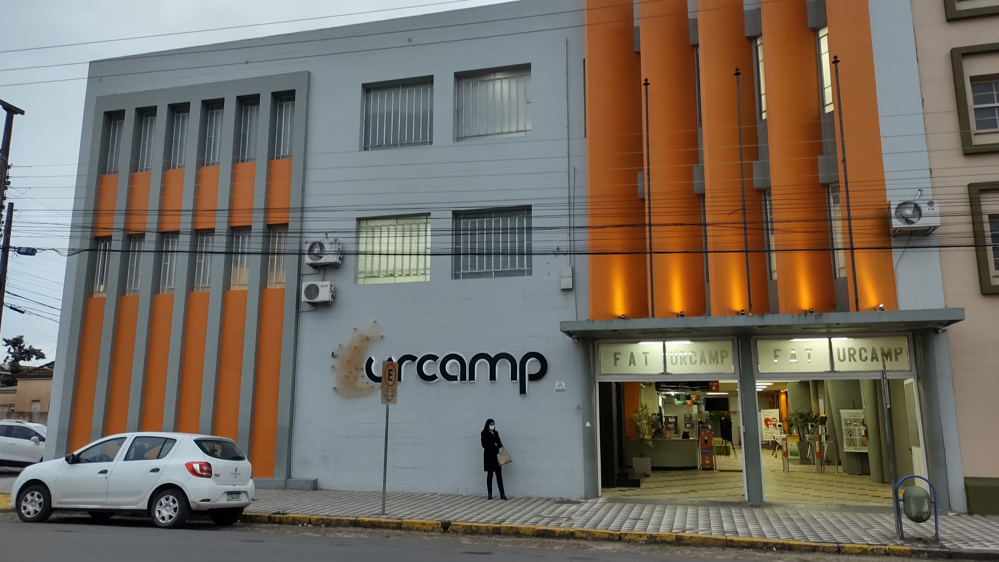
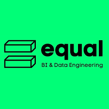
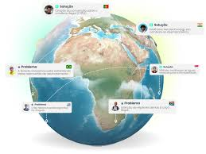

Minha jornada
Cada capítulo representa um passo real no meu desenvolvimento profissional.
(Clique nos cards para vê minhas contribuições)


Capítulo I

Minha primeira experiência
URCAMP · Estágio em desenvolvimento
De Jul./2023 até Nov./2023
Capítulo II

Em busca do meu sonho
Equal BI · Dados e Engenharia
De Fev./2024 até Mai./2024
Capítulo III
Realização pessoal e profissional
ProbY · Startup e produto
De Mar./2025 até Ago./2025
Capítulo IV
Novas aprendizagens
IDEAU · Dados e estratégia
De ago./2025 até Atual